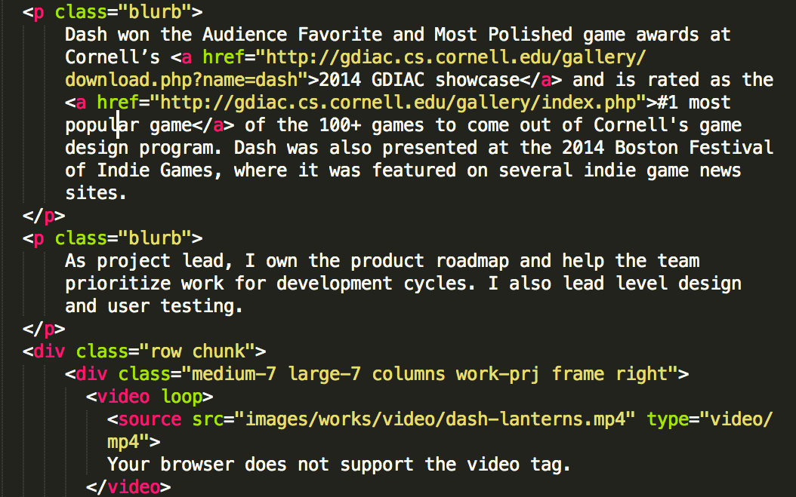

| Project |
Revibe |
| Role |
Head of Product |
| Program |
Birthright Excel Ventures |
| Description |
Employee Analytics Platform created during startup pre-accelerator based in Tel Aviv, Israel
|
| Technologies |
Axure |
Revibe
Revibe was a project built over the course of a 10-week pre-accelerator in Tel Aviv, Israel. From over 2,000 applicants, I was accepted as one of 20 to build startup projects with Israeli peers under the guidance of Israeli Venture Capitalists and business leaders.
Revibe was a workplace analytics platform that improved employee retention by diagnosing employee engagement issues. Inspired by our own observations at work, we built it as a tool for management consultants to provide actionable management insights backed by intelligence technology used by the Israeli military.
As Head of Product, I led the product strategy through discovery, validation, and MVP.
Team Formation
The first two weeks were some of the most formative. We completed a number of team-building competitions in rotating groups to find compatible cofounders. The challenges tested our skills from sales: “You have 3 hours to turn 50 shekel (~15 USD) into as much money as possible,” to product sense: “Create an IOT company and pitch it to a panel of VCs who will be coming by this afternoon.” The intense pressure quickly narrowed our focus towards team members with similar interests and different skillsets.
By the end of week 2, I had recruited a team with deep experience in sales, product, and engineering.
Discovery
Having all worked for large companies, my team was interested in understanding the relationship people have with work. We found it interesting that the majority of HR startups are so heavily focused on recruiting the best talent, but there are very few aimed at actually retaining the very employees companies work so hard to recruit. According to Harvard Business Review, employee turnover costs American companies over $30 billion every year, so we set out understand why this was such a big problem.
Validation
I interviewed dozens of managers and HR professionals in Israel and America and learned that they were often caught by surprise when an employee would quit. Losing good talent can disrupt an entire team, and managers were willing to pay to know which employees were at risk of leaving and why. Because of market size, favorable privacy laws, and feedback from customer interviews, we narrowed our early users to be managers at large (5,000+) American companies.
MVP
Through several rounds of prototyping, I created an interactive prototype that identified employee engagement issues. Using a blend of network communication analysis and feedback pulse surveys, Revibe would capture both the quantitative and the qualitative side of engagement to uncover deep organizational insights. Managers and HR leaders could use Revibe to answer crucial questions about a workforce:
- Why are employees leaving at the 2-year mark?
- Which teams are the most productive, and why?
- Which employees should we tap for leadership positions?
- Which employees do people turn to for the answers (i.e experts)?
By the end of the program, we had a working prototype and a number of potential clients that were interested in our product. We decided to pursue other projects post-program, but gained direct experience creating, marketing, and launching an enterprise product.

GE Capital
I worked with GE Capital’s IT Risk team as an ITLP (Information Technology Leadership Program) intern. It was a mix of software development and IT Leadership.
Launched Hackathon That Produced 6 New Company Applications
As chair of the intern Tech Committee, I organized a hackathon where 80% of program interns participated. By bringing our intern class together from locations in Connecticut, New Orleans, and Chicago, we produced 6 new applications for the company and networked with people in other offices.
Developed IT Audit Tracker for GE Capital Executives
During the summer, I independently developed an IT Audit Tracker for GE Capital executives to monitor IT risks. I learned that the CIO was manually assembling a weekly report to keep a pulse on business IT risks, which took very long to assemble and was prone to human error. After developing and presenting the tool to the executive team, the CIO integrated the Audit Tracker into his weekly staff meetings. I developed the tool using HTML/CSS/Javascript and Django.

| Project |
Ladder |
| Role |
Project Lead |
| Program |
3 Day Startup |
| Description |
E-sports competition platform created during startup hackathon
|
Ladder
Ladder was a project built over the course of three days during the 2014 Cornell 3 Day Startup weekend. Based on my game development experience, I knew how hard it was to successfully monetize mobile games, especially without antagonizing users. I saw an opportunity to boost engagement through competitive cash tournaments and was accepted into 3 Day Startup at Cornell, where my idea was voted as one of five projects to be developed during the event.
As project lead, I recruited a team of 4 to build out the business model and a prototype before pitching in front of a panel of Venture Capitalists and entrepreneurs and an audience of 150+.

NAMI Finger Lakes
I built a custom website for a local Ithaca nonprofit as part of a wed development class. Our client wanted their web presence to draw donations the community and be more visually appealing.
As project lead, I was the primary point of contact with the client and translated their needs into wireframes and mockups. I also designed the database schema for a MySQL database holding library books on file and implemented much of the site’s PHP backend.

FreshAir
Seasonal allergies affect over 40 million Americans every year. My project team wanted to create something that helped people cope with indoor and outdoor allergies, so we designed an allergy identification and alert system called FreshAir. I designed the app interface along with Emily Lutz and Maddy Butzbach as part of INFO 3450 - Human Computer Interaction.
How It Works
The system works via a crowdsourced network of wearable and deployed sensors that continuously monitor air quality. Through persona interviews, we found that people often do not know what they are allergic to, and therefore what to avoid. By documenting allergic reactions in the FreshAir app, the system can identify what you are allergic to so you are better prepared both in the household and outdoors.
Interactive Demo
- Sensor: current air quality data
- Map: map of local allergen density
- Reaction: document an allergic reaction
- News: local allergen reports and news
- Profile: your allergen profile and history

| Project |
This Portfolio |
| Role |
Designer and Developer |
| Technologies |
HTML, CSS, Javascript / JQuery |
This Portfolio

This website is built on the Foundation framework to be responsive on devices of all sizes. Credit to Caption.js for image captioning and to Viewport.js for helping videos to pause/play when in the browser’s viewport. The full source code is available on GitHub